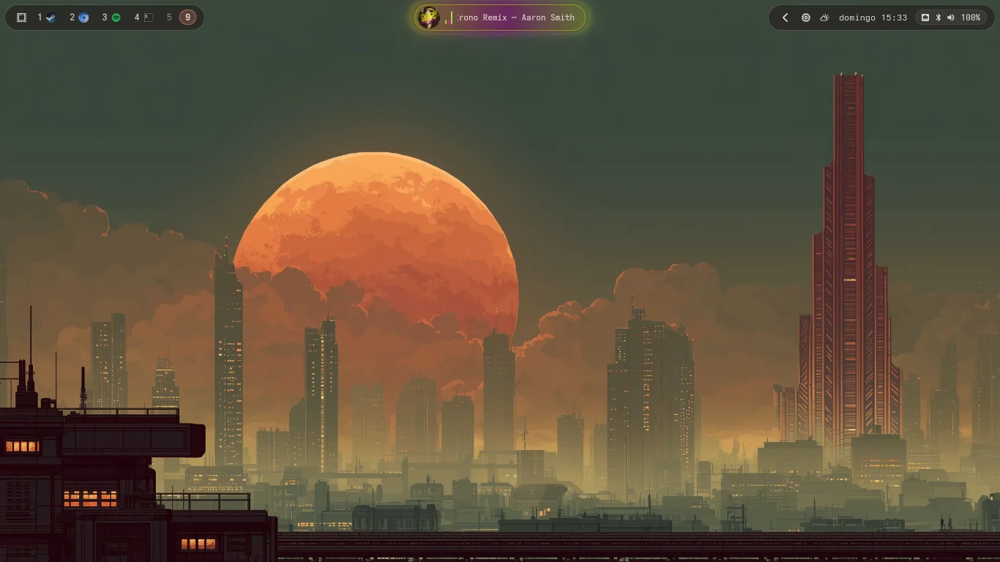
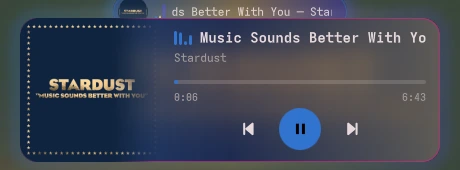
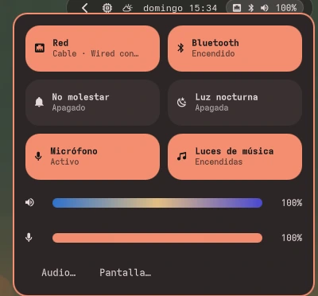
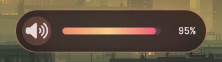
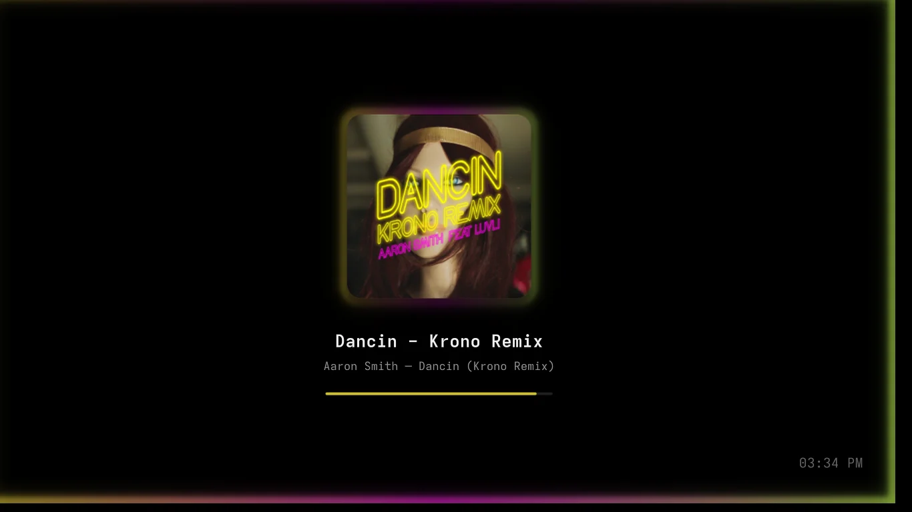
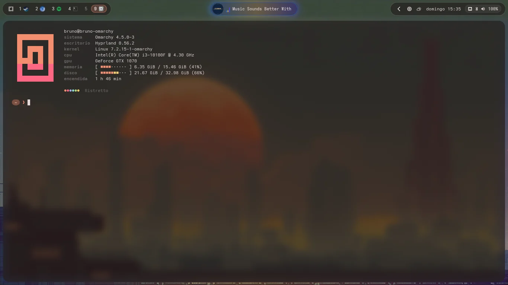

Omarchy en islasOmarchy in islands
Un diseño para Omarchy con la barra partida en islas de vidrio, un reproductor que toma los colores de la portada, un bloqueo que late con la música, y un menú y unos avisos redibujados. Todo sigue los colores del tema que tengas puesto.
A design for Omarchy with the bar split into glass islands, a player that takes its colors from the album cover, a lock screen that pulses with the music, and a redrawn menu and on-screen notices. Everything follows the colors of whatever theme you have on.

Barra en islasIsland bar
arriba · vidrio desenfocadotop · frosted glassbruno.barcopia declone of omarchy.barbruno.workspacescopia declone of omarchy.workspacesbruno.clockcopia declone of omarchy.clockskyhonnor.performanceSkyHonnor · MITomarchy/shell.jsonorden de la barra; el reloj tiene la opción music: hide en el centro, only a la derechabar layout; the clock has a music option: hide in the middle, only on the righttoggles/hypr/bar-glassy.luainterruptor de OmarchyOmarchy toggleReproductor en la barraPlayer in the bar
bruno.music · propiooriginal
Una pastilla con la portada, un ecualizador y el título que se desplaza. Al pasar el mouse se abre el menú con la portada, el progreso y los controles; un clic abre el reproductor.
A pill with the cover, an equalizer and a scrolling title. Hovering opens a menu with the cover, progress and controls; clicking opens the player.
- Toma los colores de la portada: el halo de la pastilla, el borde del menú y el botón de pausa cambian con cada canción.
- El halo late con los graves gracias a
cava. - Las luces se prenden y apagan desde el centro de control (Luces de música).
- Funciona con cualquier reproductor que hable MPRIS: Spotify, Chromium, mpv.
- It takes its colors from the cover: the pill's glow, the menu border and the pause button change with every song.
- The glow pulses with the bass, thanks to
cava. - The lights turn on and off from the control center (Music lights).
- Works with any player that speaks MPRIS: Spotify, Chromium, mpv.
bruno.musicpropiooriginalcavaCentro de controlControl center
bruno.control · propiooriginalSe abre desde la última isla de la derecha. Botones grandes con el color de acento cuando están encendidos y en gris cuando no.
Opens from the last island on the right. Large buttons in the accent color when on, and grey when off.
- Red y Bluetooth, con el estado debajo.
- No molestar y luz nocturna.
- Micrófono y luces de música.
- Barras de volumen y micrófono.
- Accesos a los ajustes de audio y pantalla.
- Network and Bluetooth, with their status underneath.
- Do not disturb and night light.
- Microphone and music lights.
- Volume and microphone sliders.
- Shortcuts to audio and display settings.
bruno.controlpropiooriginal
Avisos de volumen y brilloVolume and brightness OSD
bruno.osd · reemplaza areplaces omarchy.osd
Una pastilla abajo al centro con el ícono en un círculo, una barra con degradé y el porcentaje.
A pill at the bottom center with the icon in a circle, a gradient bar and the percentage.
bruno.osdcopia declone of omarchy.osdPantalla de bloqueoLock screen
bibek.lock · aura halohalo aura
- Hora grande, fecha y clima en una línea.
- Tarjeta de música con la portada, el progreso y los controles, teñida con los colores de la portada.
- Aura alrededor de la pantalla que late con la música (estilo
halo). - Aviso "ahora suena".
- Large clock, with date and weather on one line.
- Music card with the cover, progress and controls, tinted with the cover's colors.
- An aura around the screen that pulses with the music (
halostyle). - "Now playing" notice.
bibek.lockBibek Bhusal · MITomarchy/lock.jsonhora hh:mm AP, aura halo, intensidad 1time hh:mm AP, halo aura, intensity 1cavaProtector de pantallaScreensaver
reemplaza al de la terminalreplaces the terminal oneDespués de un rato sin usar la compu aparece la portada grande con el aura alrededor, el título, el artista y el progreso. Sin música, muestra un reloj.
After a while without input, the cover shows up large with the aura around it, plus title, artist and progress. Without music, it shows a clock.
Reemplaza al protector de terminal de Omarchy, que queda apagado.
It replaces Omarchy's terminal screensaver, which is turned off.
bibek.lockBibek Bhusal · MITtoggles/screensaver-offinterruptor de OmarchyOmarchy toggle
Ventanas y terminalWindows and terminal
Hyprland · foot · starship · fastfetch
| QuéWhat | ValorValue | ArchivoFile |
|---|---|---|
| EsquinasCorners | 18 px, curva circular18 px, circular curve (rounding_power 2) | hypr/hyprland.lua + corners-rounded |
| EspaciosGaps | 4 px entre ventanas, 8 px al borde4 px between windows, 8 px to the edge | hypr/looknfeel.lua |
| VidrioGlass | ventanas y paneles del shell desenfocadosblurred windows and shell panels | window-glassy |
| Ventana inactivaInactive window | atenuada al 14 %dimmed by 14% | hypr/looknfeel.lua |
| BordeBorder | solo con dos o más ventanasonly with two or more windows | hypr/looknfeel.lua |
| AnimacionesAnimations | ventanas y menú con popin 92%, escritorios con slidefade 12%, notificaciones desde la derechawindows and menu with popin 92%, workspaces with slidefade 12%, notifications from the right | hypr/looknfeel.lua |
| TerminalTerminal | Adwaita Mono 9 con JetBrains Mono Nerd de respaldo, margen 24 × 20Adwaita Mono 9 with JetBrains Mono Nerd as fallback, 24 × 20 padding | foot/foot.ini |
| Prompt | píldoras con los colores del temapills in the theme's colors | starship.toml |
| fastfetch | compacto, logo propio, etiquetas en español y la paleta del temacompact, custom logo, Spanish labels and the theme palette | fastfetch/ |
Colores que siguen al temaColors that follow the theme
hook theme-set · bruno-colorsCada vez que cambiás de tema, un hook lee el colors.toml del tema nuevo y recolorea el vidrio del menú y las notificaciones, las píldoras del prompt y fastfetch. Los plugins de la barra toman los colores del shell directamente. Las capturas usan Ristretto:
Every time you switch themes, a hook reads the new theme's colors.toml and recolors the menu and notification glass, the prompt pills and fastfetch. The bar plugins take their colors from the shell directly. The screenshots use Ristretto:
omarchy/hooks/theme-set.d/bruno-colorspropiooriginalArranque y cursorBoot and cursor
plymouth · catppuccin- Pantalla de arranque "bruno": el fondo desenfocado, una tarjeta de vidrio y el campo de contraseña redondeado, a tono con el bloqueo.
- Cursor Catppuccin Mocha Dark.
- "bruno" boot screen: blurred wallpaper, a glass card and a rounded password field, matching the lock screen.
- Cursor: Catppuccin Mocha Dark.
omarchy/plymouth/bruno/omarchy/plymouth/install.shpide sudoneeds sudoInstalarInstall
Omarchy 4.5El repo trae una guía paso a paso pensada para que la siga una IA con acceso a tu terminal. Aplica solo lo visual y deja como están tus monitores, atajos, dock y tiempos de bloqueo. Cada archivo que reemplaza queda guardado como .bak.
The repo includes a step-by-step guide meant to be followed by an AI assistant with access to your terminal. It applies only the visual parts and leaves your monitors, keybindings, dock and lock timings alone. Every file it replaces is backed up as .bak.
# pedile a tu asistente que siga esta guía:
https://github.com/BrunoAguinaga0/omarchy-config/blob/main/INSTRUCCIONES-IA.md
# ask your assistant to follow this guide:
https://github.com/BrunoAguinaga0/omarchy-config/blob/main/INSTRUCTIONS-AI.md
Necesitás: Omarchy 4.5 con Hyprland, cava, las fuentes Adwaita Mono y JetBrains Mono Nerd, y sudo para el arranque y el cursor.
You need: Omarchy 4.5 with Hyprland, cava, the Adwaita Mono and JetBrains Mono Nerd fonts, and sudo for the boot screen and cursor.
Las copias de los plugins de Omarchy (bruno.bar, bruno.clock, bruno.menu, bruno.osd, bruno.workspaces) salen de la versión 4.5.0. Con una versión mucho más nueva, alguna puede no cargar.
The clones of Omarchy's plugins (bruno.bar, bruno.clock, bruno.menu, bruno.osd, bruno.workspaces) come from version 4.5.0. With a much newer version, some may fail to load.